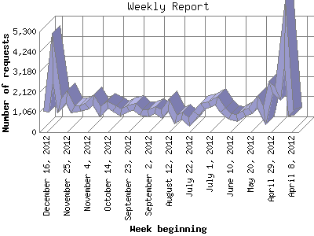

The Weekly Report identifies the activity for each week within the report
time frame. Remember that one page hit can result in several server requests
as the images for each page are loaded.
Note: Depending on the
report time frame for this report the first and last week may not represent
a full seven day week, resulting in lower hits.

| Week beginning | Number of requests | Number of page requests | |
|---|---|---|---|
| 1. | April 8, 2012 | 875 | 216 |
| 2. | April 15, 2012 | 5,216 | 817 |
| 3. | April 22, 2012 | 2,010 | 558 |
| 4. | April 29, 2012 | 2,357 | 724 |
| 5. | May 6, 2012 | 852 | 394 |
| 6. | May 13, 2012 | 1,616 | 463 |
| 7. | May 20, 2012 | 1,106 | 435 |
| 8. | May 27, 2012 | 1,008 | 400 |
| 9. | June 3, 2012 | 756 | 272 |
| 10. | June 10, 2012 | 847 | 347 |
| 11. | June 17, 2012 | 1,179 | 319 |
| 12. | June 24, 2012 | 1,639 | 567 |
| 13. | July 1, 2012 | 1,442 | 454 |
| 14. | July 8, 2012 | 1,365 | 455 |
| 15. | July 15, 2012 | 976 | 513 |
| 16. | July 22, 2012 | 554 | 314 |
| 17. | July 29, 2012 | 888 | 461 |
| 18. | August 5, 2012 | 645 | 396 |
| 19. | August 12, 2012 | 1,434 | 905 |
| 20. | August 19, 2012 | 972 | 415 |
| 21. | August 26, 2012 | 1,163 | 453 |
| 22. | September 2, 2012 | 974 | 500 |
| 23. | September 9, 2012 | 1,055 | 553 |
| 24. | September 16, 2012 | 1,314 | 602 |
| 25. | September 23, 2012 | 1,233 | 758 |
| 26. | September 30, 2012 | 1,017 | 548 |
| 27. | October 7, 2012 | 1,234 | 613 |
| 28. | October 14, 2012 | 1,438 | 591 |
| 29. | October 21, 2012 | 1,090 | 520 |
| 30. | October 28, 2012 | 1,683 | 637 |
| 31. | November 4, 2012 | 1,385 | 479 |
| 32. | November 11, 2012 | 1,261 | 588 |
| 33. | November 18, 2012 | 1,218 | 619 |
| 34. | November 25, 2012 | 1,850 | 727 |
| 35. | December 2, 2012 | 1,415 | 688 |
| 36. | December 9, 2012 | 3,916 | 793 |
| 37. | December 16, 2012 | 1,075 | 430 |
Most active week beginning August 12, 2012 : 905 pages sent. 5,216 requests handled.
Weekly average: 527 pages sent. 1,406 requests handled.
This report was generated on December 21, 2012 03:11.
Report time frame April 12, 2012 00:01 to December 20, 2012 23:52.
| Web statistics report produced by: analog 5.1 / Report Magic 2.21 |